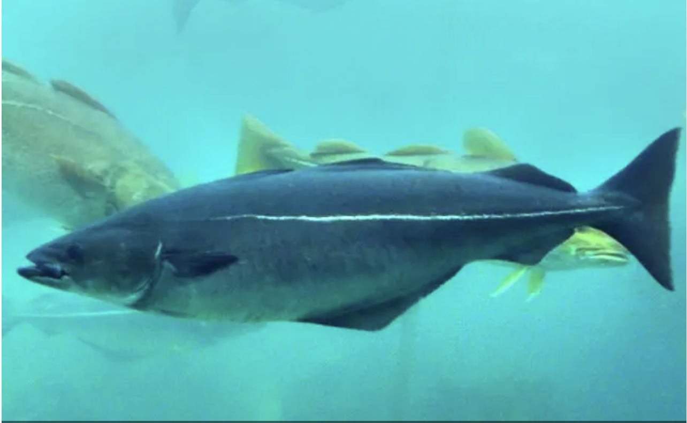
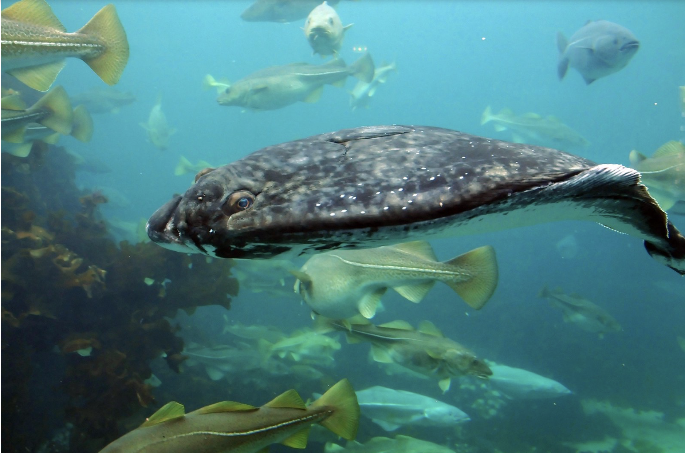

Exploring the Diverse Fish Species of the Northern Sea in Norway
Rich Marine Life and Typical Fish Species that Thrive in Norway's Northern Waters
Fishes:
-
Cod The Cod is a popular fish known for its mild flavor and versatility in various culinary dishes.
-
Coley Coley, also known as saithe, is a nutritious fish with a distinct flavor, often used in traditional recipes.
-
Atlantic Halibut The Atlantic Halibut is a large flatfish prized for its delicate taste and firm texture, making it a gourmet choice.
Explore more about Arctic Cuisine in Norway: Visit Norway - Arctic Cuisine